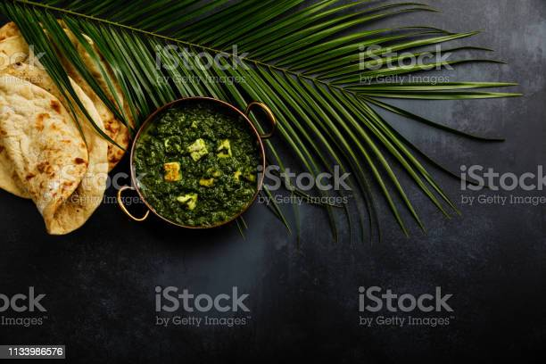

Home Page
Palak Paneer | Spinach Paneer

Palak paneer is a classic curried dish from North Indian cuisine made with fresh spinach,
onions, spices, paneer and herbs. 'Palak' is a Hindi word for 'Spinach' and 'Paneer' is 'Indian cottage cheese'.
So palak paneer translates to paneer simmered in a smooth spicy and delicious spinach gravy
or sauce. The dish is more popular in the restaurants than in the households.
The conventional method of making palak paneer is to blanch the spinach leaves
and then puree it. This spinach puree is later cooked with spices, onions and tomatoes until
a thick curry like consistency is achieved. Lastly paneer is simmered in that sauce.
For a restaurant touch usually some cream is added to this. A lot of people also add some milk for a unique flavor.
Instructions for making delicious Palak Paneer
Preparation
- This recipe needs about 4 cups loosely measured or 2 cups tightly packed (100 to 120 grams) palak leaves.
Use only young and fresh spinach. Avoid using large stems or stalks, especially from mature spinach/ palak as
they make the gravy bitter. If using baby spinach keep the tender stalks. Rinse cleaned palak thoroughly in a large
pot filled with water. I also spray some vinegar and salt to remove the pesticide residue
first. Rinse a few times more. Drain off the water completely. If you are on a low oxalate diet then you can blanch the
spinach by following the steps mentioned in the recipe card.
- Add half tablespoon oil to a pan. then add 1 to 2 chopped green chilies. There is no red chilli powder used in this recipe. So use enough green chilies to give that heat. Adjust accordingly.
- Add palak and 8 to 10 cashew nuts. Saute on a medium heat until the palak wilts off completely. This takes only 2 to 3 minutes. Do not overcook, spinach takes only 2 to 3 mins to cook.
- Ensure the raw flavor from the leaves has gone. If there is any stock (moisture) of spinach left, you can use up to blend. You need not evaporate it.
- Cool it completely. Transfer these to a blender jar. Pour ¼ cup clean water to the blender.
- Blend this to a smooth puree. It has to be thick and smooth. Keep this aside.
Making gravy
- Heat the same pan with 1 tablespoon butter and half tablespoon oil . Add 2 whole cardamoms, one inch cinnamon, 2 cloves and 1/8th teaspoon cumin seeds. If you do not have whole spices you may skip them. But we are not going to use much garam masala in powder form so I use them.
- Add ¾ cup fine chopped onions or boiled onion paste. Fry until the onions turn golden. Then add 1 teaspoon ginger garlic paste. Saute for 1 minute or until the aroma of ginger garlic comes out.
- Then add deseeded fine chopped half cup tomatoes or tomato puree and half teaspoon salt. Saute them well.
- When the tomatoes turn fully mushy, add ½ to ¾ teaspoon garam masala. Please use a good flavorful garam masala. Saute until the masala smells good for 2 to 3 mins. (Optional if you don't like chunky curry, then you may blend this as well with ¾ cup water. More in the recipe card notes)
- Pour ¾ cup water and cook covered on a medium heat until the onions are completely soft cooked. After cooking, onion tomato masala has to be thick yet should have some water. (check video for consistency) Take half teaspoon kasuri methi in your palm and crush it. Add it here.
Making palak paneer
- When the gravy thickens, lower the flame completely. Next add the palak puree. Mix it well and cook until it begins to bubble just for about 2 mins. I do not suggest cooking for long at this stage as it discolors the gravy. If you prefer your curry slightly thin, then you may stir in a few tablespoons of hot water at this stage. Taste test and add more salt.
- Add cubed paneer.
- Give a good stir. Switch off the stove. If using cream pour it now. You can skip cream is you have used cashews while pureeing the spinach. Honestly this recipe does not need cream & I don't use on a regular basis. I only used for garnishing in the pictures below. Serve palak paneer with butter naan, jeera rice, ghee rice, roti or plain paratha.
Pro Tips
- Blanched Vs unblanched spinach: I would recommend blanching, if you have been on a low oxalate diet and do not consume spinach without blanching in any other foods like dal palak or any spinach curry.
- To make palak paneer, always spinach is blanched prior to making a puree. But if you are trying to make the best palak paneer, give it a try without blanching. I am sure you will wonder how good this tastes and completely different from the one made with blanched spinach.
- Preserving the color of palak: To get the best color, keep garam masala to minimum in this recipe and also prevent overcooking spinach which darkens the dish.
- Smooth creamy texture: I have used few cashews to give a slightly creamy texture to the palak paneer gravy. However you can just skip them and use about 3 to 4 tbsps cream. You can also use blanched almonds.
- Paneer: Do choose good quality paneer as it is the key ingredient in this palak paneer recipe. I use this homemade paneer which is soft with a melt-in-the-mouth texture.
- If using frozen store bought paneer then soak it in slightly hot water for 15 to 20 mins. Drain and use. This helps to keep it soft.
Home Page